CLAUDE’S PICK
로민 — 우리은행 다큐먼트 AI 지원으로 AI 전환 가속
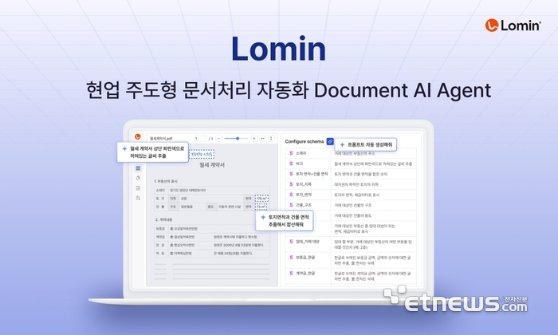
금융기관의 대량 문서 처리 과정에서 수동 작업 부담이 큰 문제를 해결하기 위해 로민이 OCR 및 파싱 등 다큐먼트 AI 기술을 제공한다. 삼성SDS 컨소시엄을 통해 우리은행의 175개 이상 AI 에이전트 구축사업에 참여하며, 통합 플랫폼 기반 SaaS 형태로 서비스를 시동하여 금융권의 AI 전환을 지원한다.
핵심 포인트: 핵심 성과: 로민의 문서 AI 기술이 우리은행의 대규모 AI 에이전트 구축사업(175개 이상)에 통합되어 금융권 디지털 전환의 핵심 기반 기술로 활용된다.
기타 (Others)
AWS IDP Pipeline: Amazon Bedrock 기반 지능형 문서 처리
비정형 데이터 처리에서 PDF, 이미지, 비디오 등 다양한 형식의 문서를 자동으로 분석해야 하는 문제를 해결하는 엔드 투 엔드 지능형 문서 처리 파이프라인. Amazon Bedrock의 멀티모달 AI 모델, LanceDB 벡터 데이터베이스, AWS Lambda, Strands Agents, Step Functions를 통합하여 구조화되지 않은 문서를 효율적으로 처리하고 인덱싱하는 프로토타입을 제공한다.
핵심 포인트: 핵심 기여: AWS CDK와 TypeScript로 구현된 완전 자동화된 멀티모달 문서 분석 파이프라인으로 PDF, 이미지, 비디오 등 다양한 형식 지원 및 벡터 기반 검색 기능 제공
🔗 github.com/aws-samples/sample-aws-idp-pip…
GitHub
PyRAG: 멀티홉 질문 답변을 위한 프로그램 합성 기반 RAG 프레임워크
기존 RAG 시스템은 멀티홉 질문에서 자유형식 자연언어로 추론하다 보니 중간 상태가 암묵적이고, 검색 쿼리가 의도한 엔티티에서 벗어나며, 오류 탐지가 신뢰할 수 없는 문제를 겪고 있다. PyRAG는 멀티홉 질문 답변을 단계별 계산 문제로 재구성하고 프로그램 합성 및 실행으로 변환하여, 코드 특화 언어 모델의 강점을 활용해 명시적 상태 관리와 체계적 추론을 구현한다.
핵심 포인트: 핵심 기여: 멀티홉 RAG를 프로그램 합성 문제로 재정의하여 중간 상태를 명시화하고, 코드 언어 모델의 구조화된 추론 능력을 활용해 검색 드리프트를 방지하고 오류 감지 신뢰성을 향상시킨다.
논문 (Papers)
AI & RESEARCH
Plantain: 계획-응답 인터리빙 추론으로 LLM 응답 속도 60% 단축
추론 모델이 사용자에게 중간 진행 상황을 보여주지 않고 오류 수정 기회를 제공하지 않아 사용자 시간이 낭비되는 문제를 해결한다. 인터리빙 추론 기법으로 모델이 생각과 중간 응답을 번갈아 제공하고, 플랜테인은 첫 단계에서 명시적 계획을 제시하여 사용자 개입과 조기 피드백을 가능하게 한다. 수학 추론 및 코딩 벤치마크에서 약 6% 성능 향상을 달성하면서 첫 응답까지의 시간을 60% 이상 단축한다.
핵심 포인트: 핵심 성과: 플랜-퍼스트 전략으로 여러 추론 및 코딩 벤치마크에서 약 6% pass@1 개선을 달성하고, 기존 think-then-answer 대비 첫 응답 시간을 60% 이상 단축.
논문 (Papers)
Goal Accessibility Ratio: 멀티턴 대화에서 LLM의 주의력 감소 메커니즘 분석
장문의 멀티턴 대화에서 LLM이 초반에는 지시사항을 잘 따르다가 점차 지시사항, 페르소나, 규칙을 잃어버리는 현상을 설명한다. 이 논문은 목표 정의 토큰에 대한 어텐션이 감소하면서 정보 접근성이 떨어지는 채널 전환 현상을 제시하고, Goal Accessibility Ratio 지표를 통해 생성 토큰에서 목표 토큰으로의 어텐션을 측정한다. 슬라이딩 윈도우 제거 및 잔차 스트림 프로브 결합으로 아키텍처별 실패 모드의 차이를 밝혔다.
핵심 포인트: 핵심 기여: Mistral에서 어텐션 채널 강제 폐쇄 시 20개 사실 유지 성능이 근완벽(100%)에서 11%로 붕괴되었으며, 선형 프로브로 잔차 표현에서 AUC 0.99까지의 목표 관련 정보 복구 가능을 입증했다.
논문 (Papers)
Microsoft Research: LLM 위임 작업에서의 문서 신뢰성 평가
LLM이 문서 편집, 스프레드시트 수정 등 다단계 위임 작업을 수행할 때 반복된 수정을 거치면서 정보 손실이 누적되는 문제를 진단한다. 논문은 이 현상을 평가하기 위한 벤치마크를 제시하며, 현재 프로덕션 시스템은 검증 루프와 도메인 특화 도구를 통해 이러한 문제를 완화할 수 있음을 강조한다. AI 시스템의 사용을 반대하는 것이 아니라, 신뢰할 수 있는 협업 도구로 발전시키기 위한 연구 방향을 제시한다.
핵심 포인트: 핵심 기여: 장기간 위임 워크플로우에서 의미론적 정보 보존을 평가하는 체인형 변환-역변환 작업 벤치마크를 제시하고, LLM이 반복 편집에서 신뢰도 저하를 누적시키는 패턴을 정량화했다.
🔗 microsoft.com/en-us/research/publication…
기타 (Others)
Letta — 장기 메모리 관리로 LLM 컨텍스트 유실 문제 해결
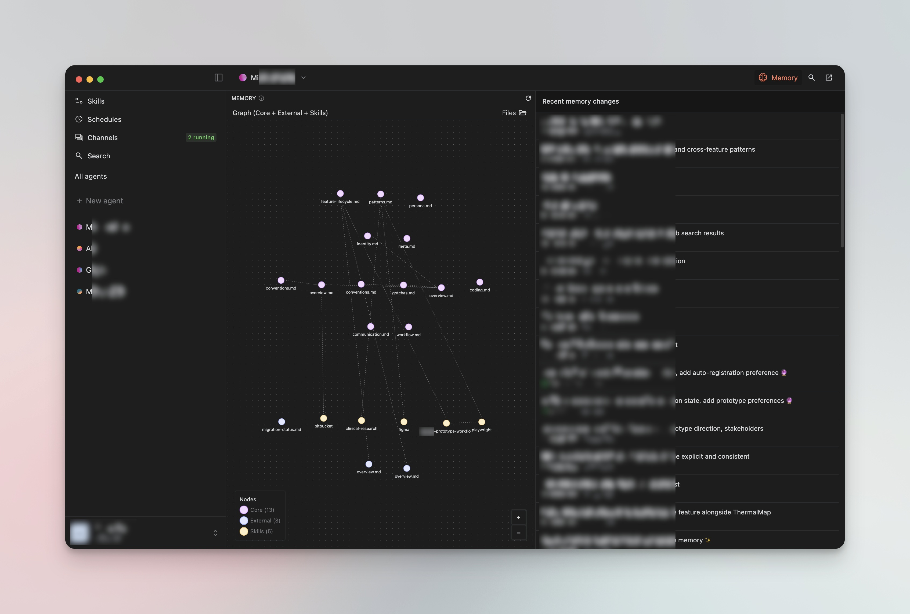
LLM 기반 에이전트 사용 시 발생하는 세션별 컨텍스트 유실과 모델 의존성 문제를 구조화된 메모리 관리로 해결하는 플랫폼. init, system, doctor, toolset, remember 등 다양한 메모리 관리 기능으로 작업 이력과 학습 내용을 체계적으로 축적하며, 필요시에만 과거 컨텍스트를 선택적으로 호출하여 토큰 효율성을 극대화한다. 로컬 메모리 저장으로 사용자가 직접 관리 가능하고, LLM 모델 변경 시에도 메모리 구조는 유지되어 장기 프로젝트에 최적화된 환경을 제공한다.
핵심 포인트: 핵심 기여: 구조적 메모리 설계로 세션별 컨텍스트 유실 방지, 에이전트 워크플로우 실행 전 안정적인 기반 구축, 장기 지속 프로젝트에서 불필요한 API 호출 및 비용 절감
🔗 threads.com/@homebodify/post/DYjtoMEkRWb?…
기타 (Others)
NuExtract3: 문서 데이터 추출 SOTA 4B 소형 모델
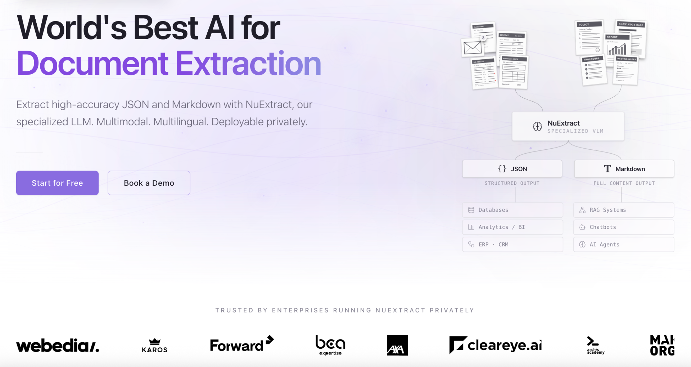
이미지와 문서에서 데이터를 추출할 때 OCR과 구조화된 JSON 변환을 동시에 수행하는 4B 크기의 오픈소스 소형 모델이 공개되었다. NuExtract3는 강화학습으로 추론 능력을 강화했으며, Gemma 4와 Qwen 3.5 같은 경쟁 모델을 능가하는 성능을 기록했다. Apache 2.0 라이선스로 공개되어 실무 AI 파이프라인에 직접 통합할 수 있다.
핵심 포인트: 핵심 성과: 4B 소형 모델로 구조화 추출과 콘텐츠 추출을 단일 모델에서 통합하며, OCR과 데이터 추출 분야에서 기존 최대 규모 모델들을 능가하는 오픈소스 문서 추출 레퍼런스 모델 달성.
🔗 about.nuextract.ai/blog/nuextract-3-relea…
기타 (Others)
Anthropic: 명세 모호성 해결을 위한 실시간 구현 노트 프롬프트
AI 모델이 사양을 구현할 때 명세의 모호성이나 예상치 못한 변수로 인해 해석상 편차가 발생하는 문제를 해결하는 프롬프트 기법. 모델이 구현 과정 중 발생하는 모든 설계 결정, 의도적 편차, 트레이드오프, 미결 질문을 실시간으로 기록하는 implementation-notes.html 파일을 유지하도록 지시함으로써, 사용자가 지속적인 피드백을 제공하고 모델의 판단 근거를 투명하게 추적할 수 있게 한다.
핵심 포인트: 핵심 기여: 모호한 명세 상황에서 AI 모델의 자율적 판단과 인간의 피드백을 반복적으로 결합하여 신뢰성 있는 구현을 실현하는 프롬프트 기법 제시
🔗 threads.com/@aicoffeechat/post/DYf9DlJk6gt
기타 (Others)
NTM: 정규화 흐름으로 구현한 빠른 확산 모델 생성
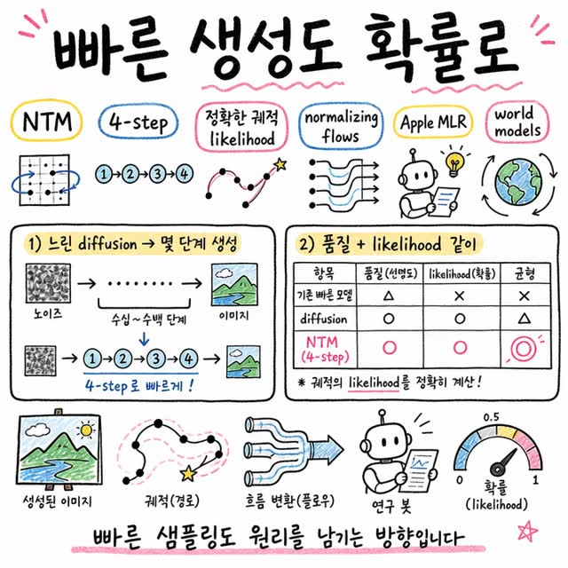
확산 모델의 다단계 가우시안 노이징 과정을 소수 단계로 압축할 때 품질 저하 문제를 해결하는 접근법. 정규화 흐름을 활용해 각 역진 단계를 표현적인 조건부 정규화 흐름으로 모델링하고 정확한 우도 훈련을 가능하게 함으로써 우도 프레임워크를 유지하면서도 소수 단계 고품질 샘플 생성을 실현한다.
핵심 포인트: 핵심 기여: 정규화 궤적 모델을 통해 기존 증류 및 일관성 훈련 방식과 달리 정확한 우도 계산을 보장하면서도 4단계 생성으로 고품질 샘플을 생성할 수 있는 이론적 프레임워크 제시
🔗 huggingface.co/papers/2605.08078
기타 (Others)
Gemini 3.5 Flash — 에이전트 작업에 특화된 고속 AI 모델
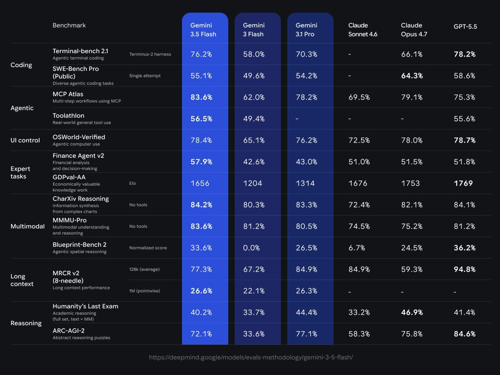
Google I/O에서 발표된 Gemini 3.5 Flash는 기존 Gemini 3.1 Pro를 대부분의 벤치마크에서 앞서며, 특히 금융 분석, 멀티모달 이해, 복잡한 차트 추론 등 실제 제품에서 반복적으로 사용되는 영역에서 성능이 크게 향상되었다. 코딩, 에이전트, 도구 사용 분야에서 동시에 성능이 상승했으며, 출력 속도는 경쟁 모델 대비 4배 빠르다.
핵심 포인트: 핵심 성과: Terminal-Bench 2.1에서 70.3%에서 76.2%로 상승, MCP Atlas 78.2%에서 83.6%로 향상, GDPval-AA Elo는 1314에서 1656으로 증가. Finance Agent v2 57.9%, CharXiv Reasoning 84.2% 달성으로 실무 중심 작업에 최적화.
🔗 blog.google/innovation-and-ai/models-and…
블로그 (Blog)
MulTaBench: 정형데이터 모델의 멀티모달 임베딩 한계를 드러내다
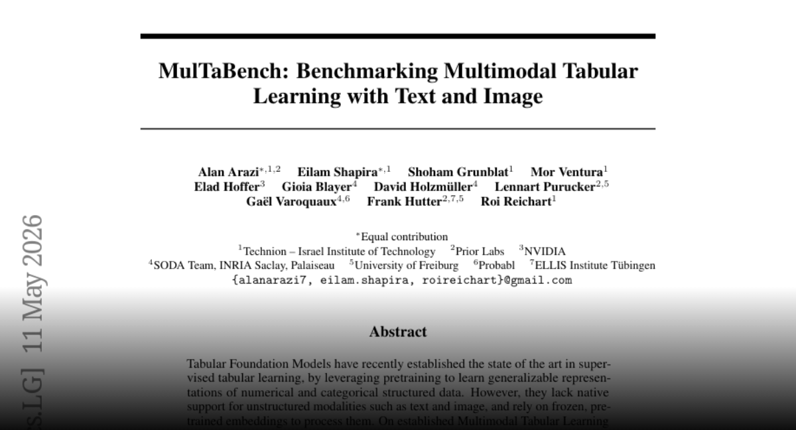
정형 데이터 기초 모델이 텍스트와 이미지 같은 비정형 데이터를 고정된 임베딩으로 단순 변환하여 통합하는 방식의 한계를 지적한다. MulTaBench는 헬스케어부터 이커머스까지 40개의 산업 데이터셋을 통해 타겟 인식 표현의 중요성을 입증하며, 작업 목표에 맞게 정렬된 멀티모달 정보 결합의 필요성을 제시한다.
핵심 포인트: 핵심 기여: 40개 실제 산업 데이터셋으로 범용 임베딩의 한계를 실증하고, 작업별 특화된 표현 학습의 성능 개선을 증명. 타겟 인식 표현을 통해 멀티모달 정형 데이터 학습의 새로운 기준점을 제시한다.
🔗 huggingface.co/papers/2605.10616
기타 (Others)
SlimQwen: 대규모 MoE 모델 경량화의 실전 노하우
초거대 AI 모델을 처음부터 학습하는 것보다 기존 사전학습 모델을 최적화하는 것이 비용 대비 성능에서 우월한 문제를 다루는 논문. Qwen 팀이 MoE 모델을 3분의 1 수준으로 압축하면서 도출한 결과를 체계적으로 분석했으며, 구조화된 가지치기(Pruning)와 지식 증류(KD) 기법을 사전학습 규모에서 적용할 때의 최적 전략을 제시한다. 동일 학습 예산 내에서 가지치기 기반 압축이 처음부터 학습하는 것보다 일관되게 우수한 성능을 달성함을 입증했다.
핵심 포인트: 핵심 성과: 구조화된 가지치기가 모든 압축 차원(깊이, 너비, 전문가)에서 동일 학습 예산 내 처음부터 학습하는 방식을 능가하며, 지식 증류 적용 시 기존 학습 방식(Next-token)을 혼합하여 모델 성능 저하를 방지할 수 있음을 입증했다.
논문 (Papers)
Gemini 3.5 Pro — 곧 출시될 구글의 최신 AI 모델
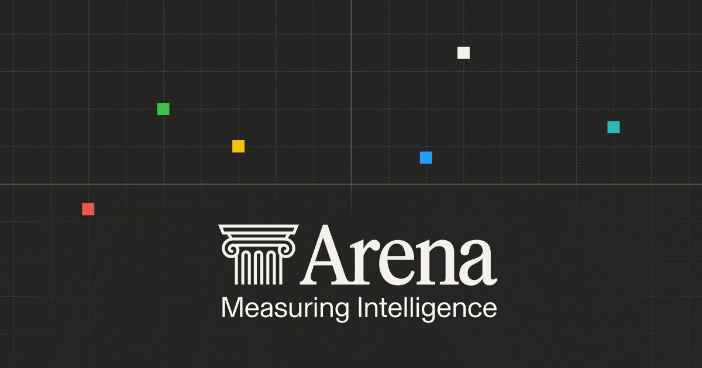
구글이 곧 제미나이 3.5 Pro를 출시할 예정이다. 현재 LM Arena에서는 미공개된 3.5 Pro 모델을 실제로 사용해본 사용자들의 후기가 공유되고 있다. 사용자들은 이전 버전인 2.5 Pro와 3.0 Pro 이후로는 사용 빈도가 줄었지만, 새로운 3.5 Pro 모델에 대해 기대감을 표현하고 있으며, 간단한 일상 질문이나 빠른 답변이 필요한 용도로 활용하되 환각 여부를 검증하는 단계가 필요하다는 의견도 나오고 있다.
핵심 포인트: 핵심 기여: LM Arena 플랫폼에서 미출시 모델의 실제 사용자 평가를 통해 제미나이 3.5 Pro의 성능과 개선 사항을 선제적으로 확인할 수 있으며, 커뮤니티 피드백을 기반으로 모델의 신뢰성과 활용도를 검증할 수 있다.
기타 (Others)
Recent Developments in LLM Architectures — 장문맥 처리를 위한 아키텍처 혁신
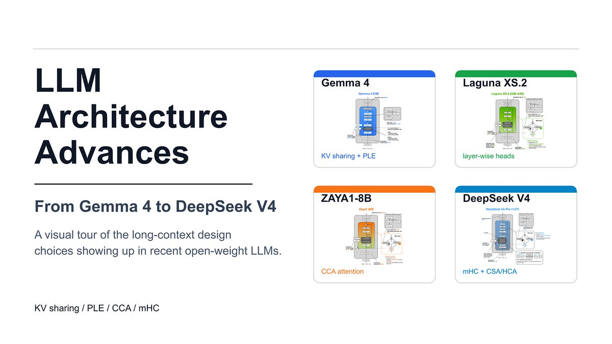
최신 LLM들의 핵심 경쟁력이 장문맥 처리 효율성으로 옮겨가면서, Gemma 4, DeepSeek V4 등 오픈 모델들이 트랜스포머 아키텍처를 대폭 개선하고 있다. KV 공유, 계층별 어텐션 예산 배분, 압축 컨볼루셔널 어텐션 등 구체적인 아키텍처 변화를 통해 메모리 사용량을 줄이고 추론 속도를 향상시킨다. 이 글은 일반적인 성능 비교가 아닌 실제 설계 변화의 기술적 세부사항을 분석하여, 현대 LLM 개발의 설계 트렌드를 체계적으로 정리한다.
핵심 포인트: 핵심 기여: KV 쉐어링, 계층별 임베딩, 어텐션 압축 등 구체적인 아키텍처 변화를 통해 장문맥 처리 시 메모리 트래픽과 연산 비용을 대폭 감소시키는 설계 패턴들을 상세히 분석하고 비교.
🔗 magazine.sebastianraschka.com/p/recent-de…
기타 (Others)
Hermes Agent — 이미지·영상 생성 기능 탑재한 AI 에이전트 업데이트
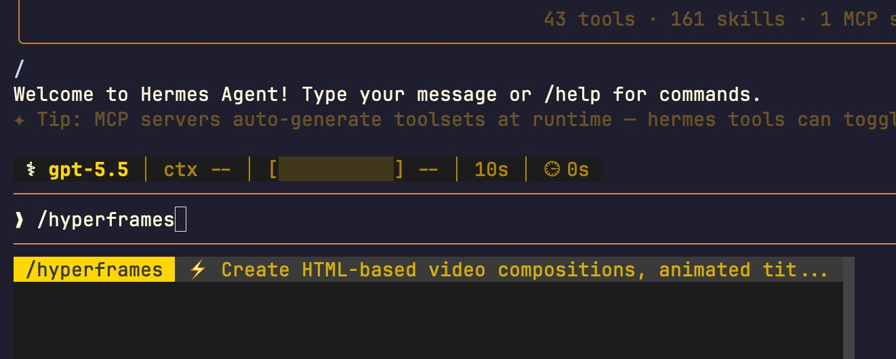
기존 이미지 생성 기능에 머물렀던 AI 에이전트 플랫폼이 영상 생성 기능을 공식 스킬로 추가하며 업데이트 속도를 크게 향상시켰다. Hermes Agent는 Hyperframes를 공식 스킬로 탑재하여 단순한 이미지 생성을 넘어 동영상 생성까지 가능하게 했으며, 이는 경쟁사 대비 빠른 기능 개발 속도를 보여준다.
핵심 포인트: 핵심 성과: Hyperframes 공식 스킬 탑재로 이미지뿐 아니라 영상 생성 기능 추가, 업데이트 속도가 기존 플랫폼을 크게 앞지르고 있음
🔗 threads.com/@unclejobs.ai/post/DX-cjrdkyH…
기타 (Others)
DEVTOOLS & OPEN SOURCE
Google Antigravity 2.0: 에이전트 기반 애플리케이션 개발 플랫폼 확대
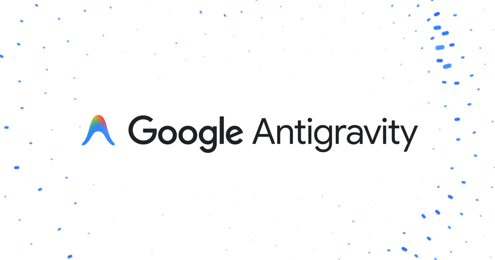
개발자들이 아이디어를 실제 애플리케이션으로 구현하는 과정이 복잡하고 시간이 오래 걸리는 문제를 해결하기 위해 구글이 Google I/O 2026에서 에이전트 우선 개발 플랫폼인 Google Antigravity 생태계를 확장했다. Gemini 3.5 Flash 모델 출시, 독립형 데스크톱 애플리케이션 Antigravity 2.0, CLI 인터페이스, SDK, 그리고 AI Studio의 네이티브 안드로이드 지원을 통해 개발자가 여러 환경에서 에이전트를 관리하고 배포할 수 있게 했다.
핵심 포인트: 핵심 성과: Gemini 3.5 Flash가 기존 모델보다 4배 빠른 속도로 구동되면서도 거의 모든 벤치마크에서 Gemini 3.1 Pro를 능가하며, 다이나믹 서브에이전트와 예약 작업 기능으로 병렬 워크플로우 자동화를 지원한다.
🔗 antigravity.google/blog/google-io-2026
기타 (Others)
OpenData Vector — 객체 스토리지 기반 상태 비저장 벡터 검색 엔진
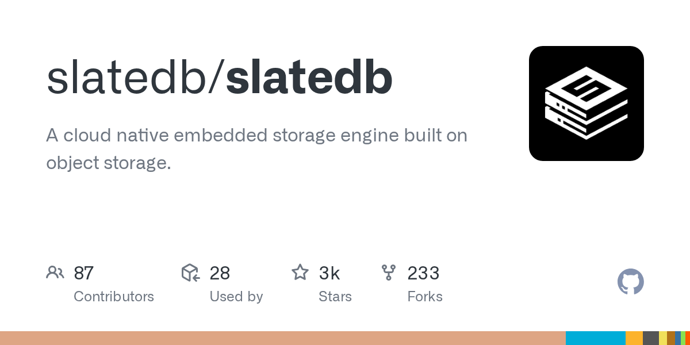
pgvector 자체 운영과 고비용 벡터 검색 서비스 간의 격차를 해소하는 MIT 라이선스 솔루션. SlateDB를 기반으로 구축된 OpenData Vector는 객체 스토리지에 접근 가능한 모든 환경에서 실행되는 상태 비저장, 내구성 있는 검색 엔진이다. 관리 용이성과 효율성을 동시에 실현하여 약 350달러/월의 저비용으로 1억 개 벡터를 제공할 수 있다.
핵심 포인트: 핵심 성과: 월 350달러 수준의 비용으로 1억 개 벡터 검색을 지원하며, 객체 스토리지의 99.999999999% 내구성 SLA와 크로스 가용영역 간 무료 네트워킹을 활용하여 전통적 벡터 데이터베이스 운영 비용을 획기적으로 절감한다.
GitHub
Claude Code Setup — 코드 분석 기반 자동화 도구 자동 추천

Claude Code 사용 시 어떤 플러그인과 도구를 설치해야 할지 결정하기 어려운 문제를 해결하는 Anthropic의 공식 플러그인. 사용자의 코드베이스를 읽기 전용으로 분석한 후 MCP, Skills, Hooks, Subagents, Slash commands 다섯 가지 카테고리에서 프로젝트에 최적화된 도구를 자동으로 큐레이션하고 추천한다. React 프로젝트 감지 시 Playwright MCP 제안, 인증 코드 발견 시 security-reviewer subagent 호출 등 구체적인 상황별 맞춤 추천을 제공한다.
핵심 포인트: 핵심 기여: 코드 구조 자동 분석을 통해 프로젝트 타입 판별 및 맞춤형 도구 추천으로 설정의 진입장벽을 낮추고, 3~5개 확장 추천까지 지원하여 의사결정 시간을 단축한다.
🔗 claude.com/plugins/claude-code-setup
기타 (Others)
Claude API — 시스템 프롬프트 사전 캐싱으로 응답 속도 52% 단축
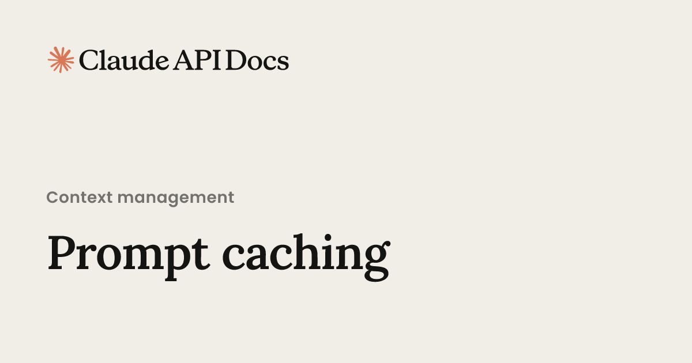
Claude API 사용자들이 응답 속도를 개선하려 할 때 직면하는 지연 문제를 해결하기 위해 앤트로픽이 프롬프트 캐싱 기법을 제시했다. 시스템 프롬프트를 미리 캐시에 올려두는 프리워밍 방식으로 첫 토큰 생성 속도(TTFT)를 최대 52%까지 단축할 수 있으며, 다중 턴 대화에서는 전체 프롬프트 프리픽스를 캐싱해 지연 시간과 토큰 비용을 동시에 감소시킨다. 다만 5분의 캐시 유지 시간으로 인해 연속 작업에 유리하고, 최근 토큰 소비 급증 논란 속에 비용 최적화를 사용자에게 전가하는 것 아니냐는 비판도 제기되고 있다.
핵심 포인트: 핵심 성과: 프롬프트 캐싱 기법으로 첫 토큰 생성 속도를 최대 52% 단축하고 다중 턴 대화에서 토큰 비용을 함께 절감.
🔗 platform.claude.com/docs/en/build-with-cl…
기타 (Others)
CLAUDE.md — Claude 코드 실수율을 40%에서 3%로 낮추는 65줄 가이드
Claude Code 사용 시 생성 코드의 40%가 재작성되는 문제를 해결하기 위해 개발된 65줄짜리 마크다운 템플릿. Andrej Karpathy의 LLM 코딩 실패 패턴 분석(잘못된 가정, 과도한 일반화, 인접 코드 손상)을 Forrest Chang이 4가지 행동 규칙으로 압축했으며, 실제 30개 코드베이스에서 6주간 검증한 결과 실수율이 41%에서 3% 이하로 감소했다.
핵심 포인트: 핵심 성과: GitHub 최초 24시간 5,828개 별 획득, 2주 만에 60,000 북마크, 현재 120,000개 별로 2026년 가장 빠르게 성장하는 단일 파일 레포지토리. 템플릿 적용 시 Claude의 명령 준수율 약 80%, 실수율 한 자릿수 달성.
🔗 github.com/forrestchang/andrej-karpathy-s…
기타 (Others)
DeepEval — 유전 알고리즘으로 프롬프트를 자동 최적화하는 평가 프레임워크
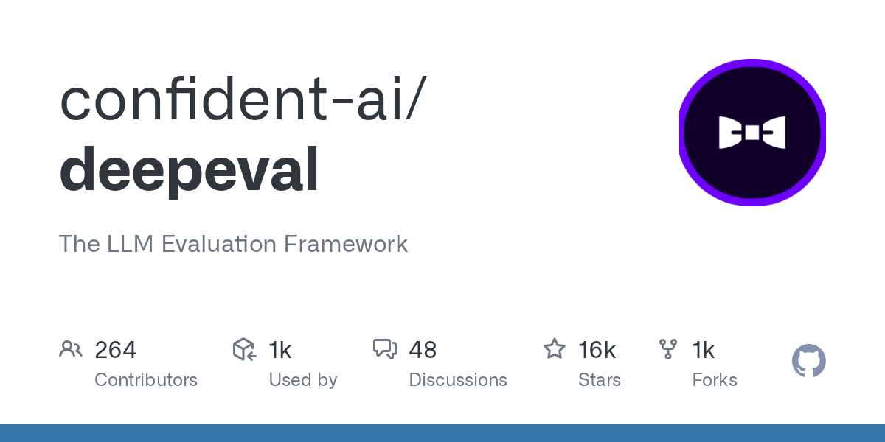
LLM 프롬프트 개선 시 수동으로 반복 수정하는 비효율성을 해결하는 도구. DeepEval은 유전 알고리즘을 활용해 테스트 실행, 실패 지점 피드백 수집, LLM 기반 프롬프트 자동 수정, 점수 기반 선별을 반복하며 프롬프트를 진화시킨다. 50개 이상의 지표(환각, 답변 관련성 등)를 동시에 최적화할 수 있어 의미 없는 수동 테스트 반복을 제거한다.
핵심 포인트: 핵심 기여: 유전 알고리즘 기반 자동 프롬프트 진화로 수동 최적화 제거, 50개 이상의 평가 지표를 동시에 최적화 가능하며 프롬프트 개선 사이클을 자동화
🔗 github.com/confident-ai/deepeval
GitHub
ENGINEERING
Google TPU 8: 훈련과 추론 분리로 AI 에이전트 시대 준비
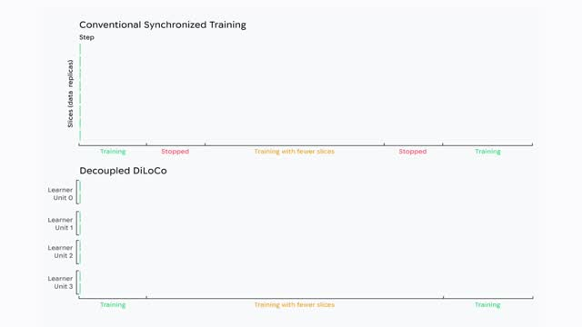
AI 비용의 중심이 훈련에서 추론으로 이동하면서 구글이 제8세대 TPU를 훈련용 8t와 추론용 8i로 분화했다. TPU 8t는 대규모 사전학습에 최적화되어 이전 세대 대비 약 3배 향상된 컴퓨팅 성능을 제공하고, TPU 8i는 낮은 지연시간의 고속 추론에 특화되어 있다. 두 칩 모두 와트당 성능이 최대 2배 향상되었으며, 구글은 2024년 약 1,900억 달러 규모의 자본 투자로 AI 에이전트 시대를 대비하고 있다.
핵심 포인트: 핵심 기여: TPU 8t는 원시 컴퓨팅 성능 3배 향상, 추론용 TPU 8i로 지연시간 최소화, 양쪽 칩 모두 와트당 성능 최대 2배 개선으로 에이전트 시대의 비용 효율성 극대화
🔗 blog.google/innovation-and-ai/infrastruct…
블로그 (Blog)
Amazon Bedrock AgentCore: AI 에이전트 운영 플랫폼
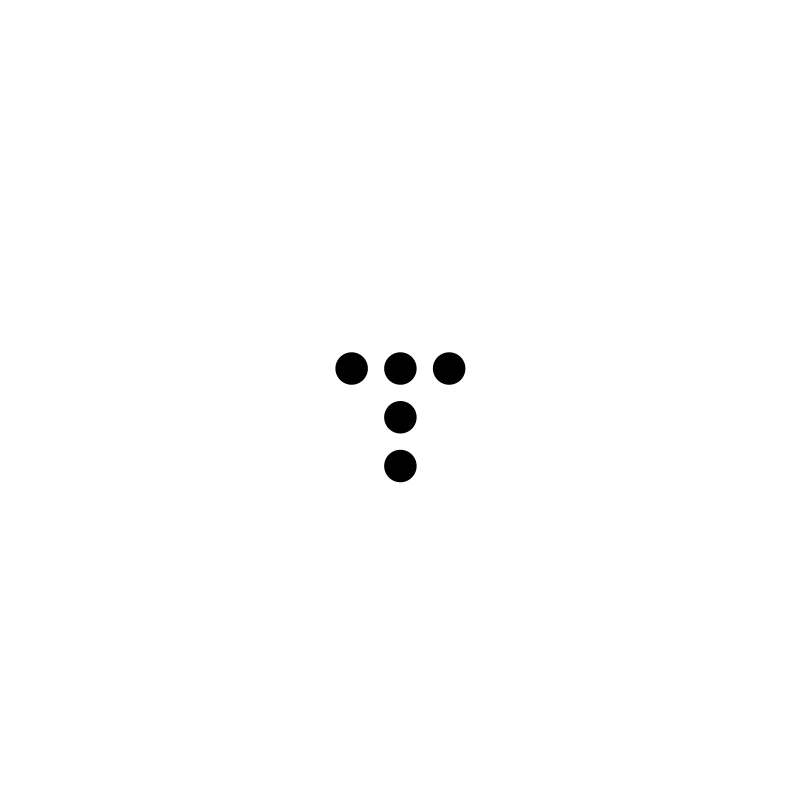
LLM 기반 에이전트를 프로덕션 환경에 배포할 때 Runtime, Memory, Gateway 등 여러 계층의 복잡한 인프라 구축이 필요한 문제를 해결하기 위해 AWS가 제공하는 관리형 플랫폼. Runtime에서 에이전트를 실행하고, Memory에서 세션 및 장기 기억을 관리하며, Gateway를 통해 외부 도구를 통합 연결하고, Identity와 Policy로 인증·권한·도구 호출을 통제하는 모듈형 구성으로 에이전트 운영의 보안, 모니터링, 상태 보존을 일관되게 제공한다.
핵심 포인트: 핵심 기여: Runtime, Memory, Gateway, Identity, Policy, Code Interpreter, Browser, Observability 9개 핵심 구성요소를 독립적으로 또는 조합하여 사용할 수 있는 모듈형 아키텍처로 에이전트 운영의 복잡성을 단순화하고, Policy를 Gateway 경계에서 평가하여 도구 호출 제어를 애플리케이션 로직에서 분리.
🔗 sincenwhile.tistory.com/entry/AWS-AgentCo…
기타 (Others)
Glean: 통합 인덱싱으로 LLM 토큰 비용 50% 절감
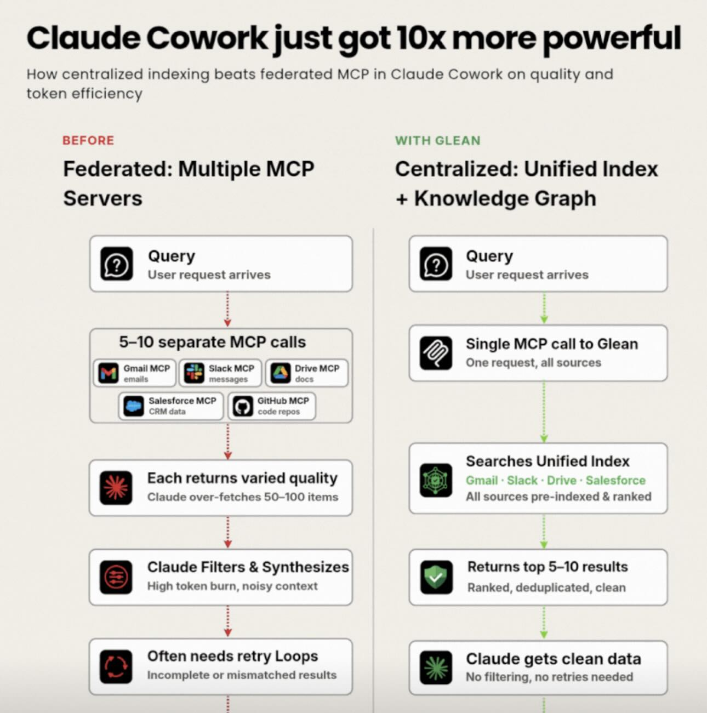
연합형 MCP 아키텍처에서 여러 데이터 소스마다 별도 AI 호출을 수행할 때 불필요한 데이터까지 처리하면서 토큰 비용이 증가하는 문제가 발생한다. Glean은 모든 데이터를 중앙집중식 통합 인덱스와 지식 그래프로 구축하여 단일 MCP 호출로 정제된 결과를 반환함으로써 이 문제를 해결한다. 벤치마크 결과 토큰 사용량을 83k에서 43k로 절반 이상 줄이면서 동시에 결과 만족도를 2.5배 향상시켰다.
핵심 포인트: 핵심 성과: 토큰 비용 50% 절감(83k→43k), 결과 만족도 2.5배 증가, 기존 연합형 MCP 대비 추론 과정 단순화로 불필요한 데이터 필터링 제거
🔗 glean.com/blog/cowork-mcp-eval
기타 (Others)
PRODUCT & INDUSTRY
Willison
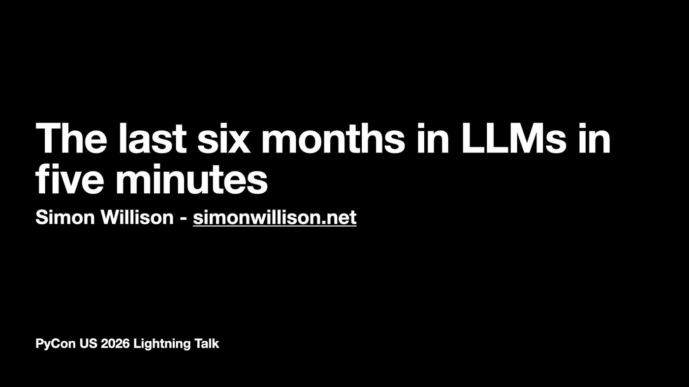
AI 연구자 Simon Willison이 6개월치 LLM 변화를 5분 분량으로 정리했어 :fire: 결론부터 말하면, 지금은 단순히 ‘모델이 좋아졌다’는 얘기가 아니야. 1위가 4번 바뀌었고, 오픈소스가 프런티어를 따라잡았고, AI가 실제 신약 임상시험을 돌리고 있어.
🔗 simonwillison.net/2026/May/19/5-minute-ll…
기타 (Others)
Google I/O 2026: Gemini Omni·3.5와 AI 에이전트 생태계 확대
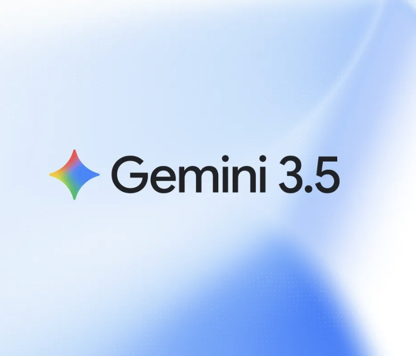
구글이 Google I/O 2026에서 차세대 AI 모델과 개발자 도구를 공개했다. Gemini Omni는 텍스트, 이미지, 오디오, 비디오를 처리하는 멀티모달 모델이며, Gemini 3.5 Flash는 기존 대비 4배 빠른 속도로 절반 비용을 제공한다. 개발자 특화 도구로 Antigravity 2.0 자율 AI 에이전트 플랫폼과 CodeMend 보안 취약점 자동 수정 기능이 추가되었고, 24시간 클라우드 기반 개인 비서 Gemini Spark, Android XR 생태계 확대, AI 네이티브 디자인 플랫폼 Stitch 2.0 등이 함께 발표되었다.
핵심 포인트: 핵심 성과: Gemini 3.5 Flash는 코딩 에이전트 성능을 대폭 향상시키고 개발 환경을 12배 최적화하며, Ultra 요금제 가격을 250달러에서 200달러로 인하. Stitch 2.0은 자연어 입력만으로 HTML, CSS, React 코드를 실시간 생성하며 Figma와 연동 가능.
🔗 threads.com/@youtubejocoding/post/DYh_Xam…
기타 (Others)
Google Antigravity — 에이전트 기능 확장 및 다중 플랫폼 지원 시작
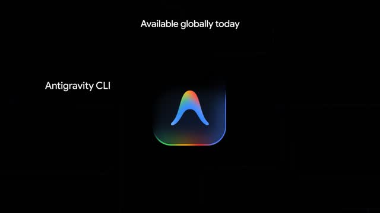
Google이 AI 에이전트 플랫폼 Antigravity의 기능을 확대하고 있다. CLI와 SDK 도구, Gemini 오디오 모델의 네이티브 음성 지원, Antigravity 2.0 데스크톱 애플리케이션, Google AI Studio와 Android, Firebase 등 다양한 플랫폼과의 통합 기능을 모두 공개했다. 이를 통해 개발자들이 에이전트 기반 애플리케이션을 더욱 쉽게 구축하고 배포할 수 있는 환경을 제공한다.
핵심 포인트: 핵심 기여: CLI, SDK, 데스크톱 애플리케이션 등 5가지 주요 도구와 플랫폼을 동시에 출시하여 개발자의 접근성을 높였으며, Gemini 오디오 모델의 음성 지원으로 멀티모달 에이전트 개발을 가능하게 했다.
🔗 github.com/first-fluke/oh-my-agent
GitHub
Google Search — AI 에이전트 기반 작업 공간으로 진화

기존 검색 결과 제시 방식에서 벗어나 사용자의 복잡한 질문을 다중 하위 질문으로 분해하여 처리하는 AI 기반 검색 시스템으로 진화하고 있다. 새로운 검색창은 이미지, 파일, 링크를 포함한 맥락 정보를 입력받아 사용자 의도를 사전에 파악하고, 쿼리 팬아웃 기법으로 관련 도구 활용, 추적, 구매까지 통합된 작업 공간을 제공한다. 월간 10억 사용자 규모의 AI Mode 배포로 기존 검색 습관 위에 직접 통합되는 전략을 추진 중이다.
핵심 포인트: 핵심 전략: 월간 10억 사용자 규모의 AI Mode 배포로 데스크톱과 모바일 전 채널에서 전개되며, 검색창부터 결제까지 통합된 AI 에이전트 기반 작업 공간으로 전환 중이다.
🔗 threads.com/@choi.openai/post/DYiwW_bGpuU…
기타 (Others)
Google Antigravity 2.0 — AI 에이전트 관리 중심의 개발 플랫폼 전환
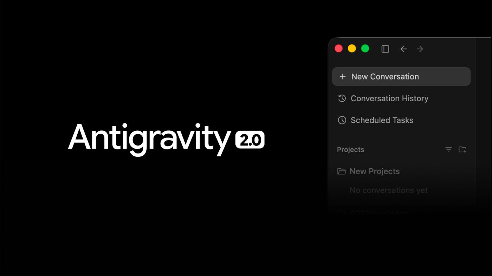
기존 AI 개발 도구들이 코드 자동완성 중심에서 벗어나면서, 구글의 Antigravity 2.0은 여러 AI 에이전트에게 작업을 분배하고 모니터링하는 관리 플랫폼으로 진화했다. Manager Surface를 통해 에디터, 터미널, 브라우저, 실행 로그와 검증 기록을 통합하여 AI가 생성한 코드의 실제 동작을 브라우저에서 자동으로 검증하고, 투명한 검증 기록을 제공함으로써 개발팀이 AI 결과물을 신뢰하고 운영할 수 있도록 설계되었다.
핵심 포인트: 핵심 기여: AI IDE에서 다중 에이전트 작업 관리 플랫폼으로의 패러다임 전환을 실현하며, 프로토타입부터 배포까지 일관된 워크플로우를 Gemini 모델과의 연동을 통해 통합한 통합 개발 환경 제공.
🔗 threads.com/@choi.openai/post/DYibQwVj3rM…
기타 (Others)
Anthropic: 안드레 카파시 합류로 AI 연구 강화
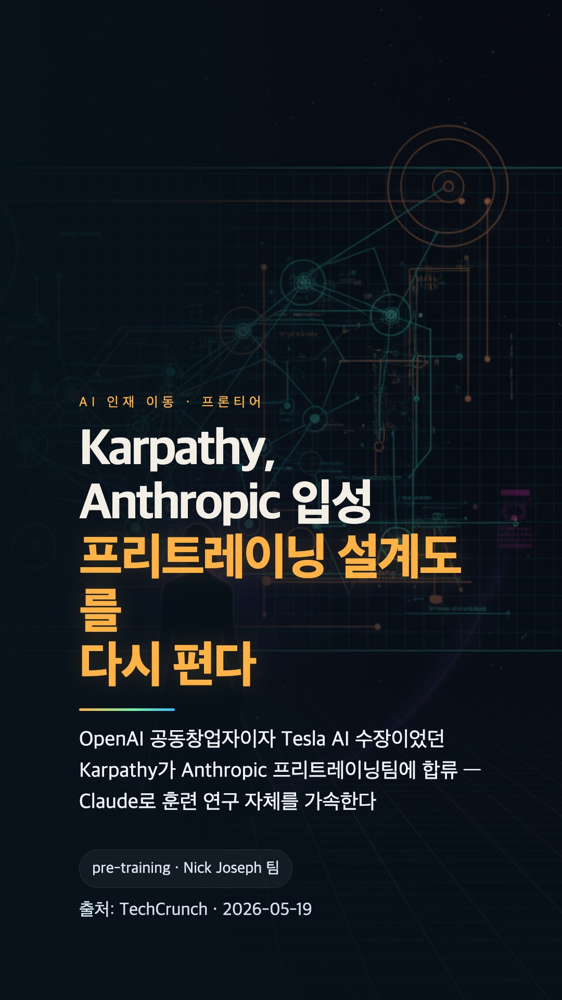
OpenAI 창립 멤버이자 Tesla AI 디렉터였던 안드레 카파시가 Anthropic에 합류했다. 카파시는 순수 모델 성능보다 AI를 실제 개발 흐름과 인간 학습 과정에 통합하는 방법에 집중해온 연구자로, 이는 Claude의 코딩·교육·에이전트 기능 방향성과 일치한다. Anthropic이 Claude Code, Managed Agents, MCP, 장기 메모리, 에이전틱 워크플로우를 빠르게 확장 중인 상황에서 카파시의 합류는 회사의 연구 색깔을 한층 강화할 것으로 예상된다.
핵심 포인트: 핵심 의의: 프론티어 LLM 연구를 주도해온 업계 석학의 영입으로 Anthropic의 AI 생태계 철학과 연구 방향성이 더욱 공고해질 전망. 카파시 본인이 향후 몇 년이 LLM 역사상 가장 형성적인 시기가 될 것이라 표현한 만큼 실무 중심의 AI 응용 연구가 가속화될 것으로 기대된다.
기타 (Others)
Gemini Desktop — 구글의 AI 운영체제 전쟁 본격화
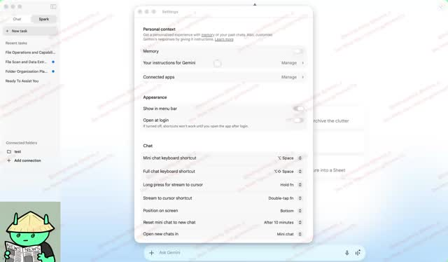
AI 서비스 간 경쟁이 커서 위치 추적, 로컬 파일 제어, 브라우저 통합으로 확대되고 있다. 구글이 유출된 Gemini 데스크톱 앱을 통해 Stream to Cursor 기능으로 사용자의 커서 위치를 실시간 추적하고, Gemini Spark로 로컬 폴더 직접 제어 및 Skills 지원을 통합하며 운영체제 레벨의 AI 통합을 추진 중이다. Chrome에 Gemini를 정식 출시하면서 브라우저 기반 작업 수행 기능까지 강화하고 있다.
핵심 포인트: 핵심 성과: Gemini in Chrome 정식 출시로 다중 탭 교차 검증, 영상 실시간 요약, 이미지 편집 등 웹 기반 작업 기능 제공. Agent mode와 Chat mode 분리로 자동화된 작업 실행 에이전트 형태로 전환 중이며, 구글이 다음 I/O에서 공개할 Android 및 AI OS 연동으로 운영체제 통합 AI 생태계 완성 예상.
🔗 threads.com/@choi.openai/post/DYgmgn1gboX…
기타 (Others)
Claude Platform on AWS — 앤트로픽, AWS 전용 에이전트 기능 플랫폼 공개
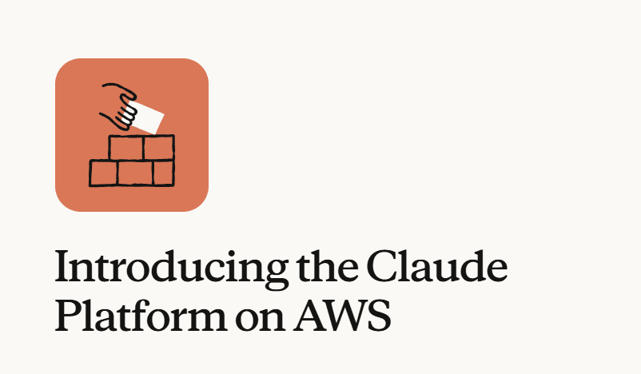
AWS 베드록의 기능적 한계를 극복하기 위해 앤트로픽이 AWS 환경에 최적화된 기업용 AI 플랫폼 Claude Platform on AWS를 정식 출시했다. 이 플랫폼은 에이전트 기능을 탑재하여 기존 베드록 기반 서비스의 제약을 넘어서며, AWS 인프라와 보안 표준을 준수한 엔터프라이즈급 솔루션을 제공한다.
핵심 포인트: 핵심 기여: 베드록 대비 확장된 에이전트 기능과 함께 AWS 환경에 최적화된 전용 플랫폼 제공으로 기업 고객의 AI 활용성을 강화하고, AWS 생태계 내에서의 클로드 모델 활용도를 확대했다.
🔗 aitimes.com/news/articleView.html?idxno=2…
기타 (Others)
ShotGlass — Apple 광고처럼 화면을 녹화하는 Mac 앱
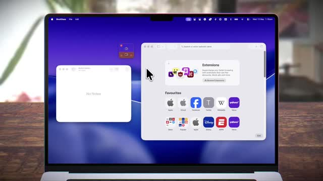
Mac 사용자들이 제품 데모를 만들 때 스크린샷, 녹화, 편집 등 여러 앱을 번갈아 사용해야 하는 불편함이 있다. ShotGlass는 화면 녹화와 스크린샷을 하나의 앱에서 처리하고, 3D 맥북 프레임이나 자동 줌 효과를 적용하여 Apple 광고처럼 시네마틱한 데모를 자동으로 생성한다. 출시 3일 만에 유료 사용자 70명을 돌파했으며, Reddit을 통한 제품 공개 후 큰 반응을 얻었다.
핵심 포인트: 핵심 성과: 출시 후 3일 만에 유료 사용자 70명 달성. 복수 윈도우 녹화, 자동 3D 효과, 주석 기능을 하나의 앱에서 제공하여 기존 화면 녹화 도구와 차별화.
기타 (Others)
Claude Mythos — 앤트로픽의 새로운 모델 GCP 콘솔에 등장
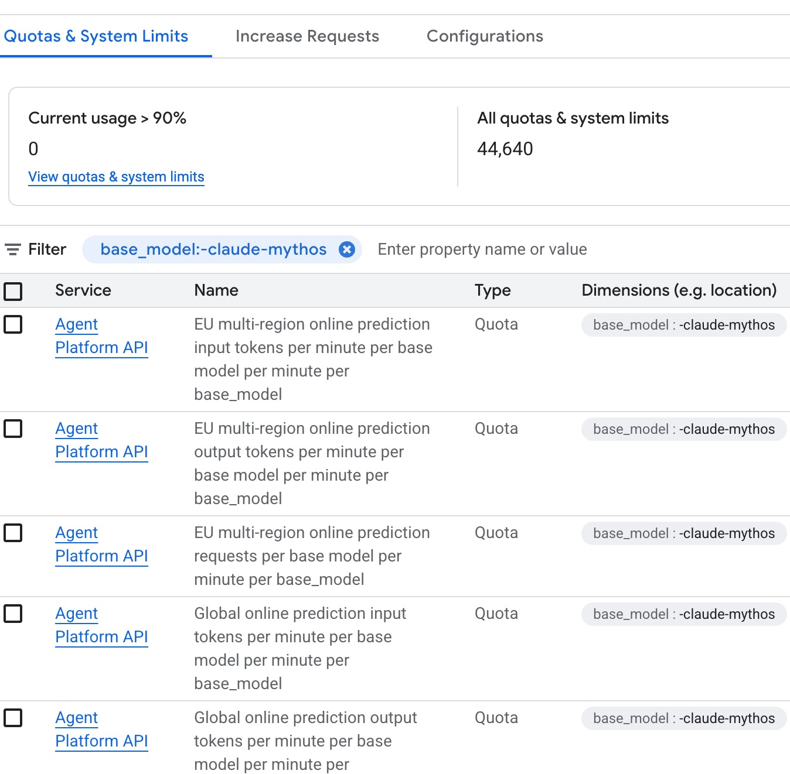
앤트로픽이 기존에 공개하지 않던 Claude Mythos 모델을 Google Cloud Console에 공개했으며, 프리뷰 라벨까지 제거되어 출시 임박 상황으로 보인다. Opus 4.7의 공개 전 등장 패턴과 유사하며, Mythos는 일반 공개보다는 GCP 기반 기업 고객을 대상으로 먼저 제공될 가능성이 높다. 동시에 구글의 Gemini 3.2 Flash-lite-live도 발견되어 빅테크 간 AI 모델 경쟁이 다시 가열될 것으로 예상된다.
핵심 포인트: 핵심 성과: Claude Mythos 모델이 GCP 콘솔에서 프리뷰 상태를 벗어나 정식 공개 직전 단계 진입, 기업 고객 우선 제공 전략으로 진행 중.
🔗 youtu.be/rGO6yYBJoLc?si=rbqgixT9dq6hU3sy
기타 (Others)